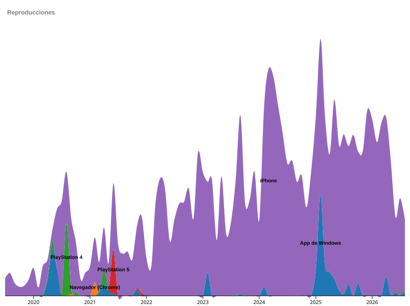

¿Qué bandas escuché más, año tras año?
Ranking animado: las barras se reordenan a medida que avanza el tiempo.
Cargando visualización…
¿En qué momentos de la semana escucho más?
La intensidad del color marca dónde se concentran las reproducciones.
Cargando visualización…

¿Con qué escucho, y cómo fue cambiando?
Cada banda de color es un dispositivo; su grosor es cuánto sonó ese mes.
Cargando visualización…

Deslizá el gráfico para verlo completo
¿Desde qué lugares escuché?
El tamaño de cada símbolo representa la magnitud en esa ubicación.
Cargando visualización…

¿Cómo se reparten mis escuchas de Airbag?
Cada punto es un registro, separado del resto para que se vea la distribución sin superposiciones.
Cargando visualización…